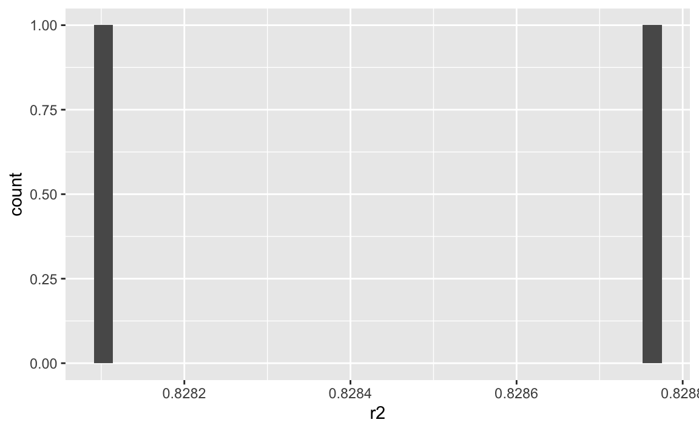

Being a teacher (in some part of my life), I conducted a prediction contest. Students had to predict a bunch of values as precisely as possible. That’s the sort of stuff data scientist do (or are said to do). As far as I am concerned, I was looking at a convenient way of grading the prediction data. Here’s an attempt.
I’m sorry that post is not fully reproducible. The reason is a privacy rights of my students and that I do not want to fully undisclosure the data set I used, because I might use it for upcoming student cohorts. Teachers: Feel free to contact me if you like to know more about the data set.
library(tidyverse)
library(testthat)
library(data.table)
library(glue)
library(here)
library(skimr)Use ?data.table etc. for help on the packages.
try_readcsv <- function(file, verbose = FALSE) {
# import csv file
x <- data.table::fread(file, header = TRUE)
# if more than 2 columns, only select first and last one:
if (ncol(x) > 2) {
x <- x %>%
select(1, last_col())
}
if (ncol(x) == 1) stop("Only 1 column! There should be (at least) two: ID and predictions.")
names(x) <- c("id", "pred")
x <-
x %>%
mutate(across(where(is.character),
.fns = ~ str_replace_all(., pattern = ",",
replacement = ".")))
if (verbose == TRUE) {print("Ncol: "); print(ncol(x))}
return(x)
} r2 <- function(predicted, observed) {
rss <- sum((predicted - observed) ^ 2) ## residual sum of squares
tss <- sum((observed - mean(observed)) ^ 2) ## total sum of squares
rsq <- 1 - rss/tss
return(rsq)
}Mean Squared Error
mse <- function(predicted, observed) {
mse <- mean((predicted - observed) ^ 2) ## mean residual sum of squares
return(mse)
}gen_error <- function(predicted, observed, degree = 1) {
generr <- mean(abs(predicted - observed) ^ degree) ## mean residual sum of squares
return(generr)
}Define solution file name, and check whether this file name exists:
solution_filename <- paste0("/Users/sebastiansaueruser/Google Drive/Lehre/Lehre_AKTUELL/2020-WiSe/WisMeth/Prognose-Wettbewerb/Prognose-Material/Material-nur-fuer-Lehrende/test_df_teacher.csv")
stopifnot(file.exists(solution_filename))Import the solution data:
test_df_teacher <- read_csv(solution_filename)
test_df_teacher <-
test_df_teacher %>%
mutate(id = row_number()) %>%
select(id, pay)Get the list of existing files.
Here’s the project path; in your case it will be different.
proj_path <- "/Users/sebastiansaueruser/Google Drive/Lehre/Lehre_AKTUELL/2020-WiSe/WisMeth/Prognose-Wettbewerb/Prognose-Material"subm_path <- paste0(proj_path, "/Submissions/")
submissions <- list.files(path = subm_path,
pattern = "\\.csv$",
recursive = TRUE,
full.names = TRUE)Here is the list of CSV files:
submissions %>%
head()
#> [1] "/Users/sebastiansaueruser/Google Drive/Lehre/Lehre_AKTUELL/2020-WiSe/WisMeth/Prognose-Wettbewerb/Prognose-Material/Submissions//64d4faba5afe920efbf0001812299853.csv"
#> [2] "/Users/sebastiansaueruser/Google Drive/Lehre/Lehre_AKTUELL/2020-WiSe/WisMeth/Prognose-Wettbewerb/Prognose-Material/Submissions//9c31e89af1b4b1bc67c639708f5b5fa3.csv"No worries. That are anonymized data files.
The length of this vector should match the number of students (or student teams) we expect:
length(submissions)
#> [1] 2We build a list data frame for a tidyverse style data manipulation.
subm_df <-
# create column file submission names:
tibble(filepath = submissions) %>%
mutate(filename = str_extract(filepath, "/[^/]*.csv$")) %>%
# creat list column with submission data:
mutate(subm_data = purrr::map(.x = filepath,
.f = ~ try_readcsv(.x))) %>%
# unnest the columns of the list column:
unnest_wider(subm_data)See:
subm_df
#> # A tibble: 2 x 4
#> filepath filename id pred
#> <chr> <chr> <list> <list>
#> 1 /Users/sebastiansaueruser/Google Drive… /64d4faba5afe920efbf… <int [3… <chr […
#> 2 /Users/sebastiansaueruser/Google Drive… /9c31e89af1b4b1bc67c… <int [3… <chr […Check if all values of pred are of type character:
map_chr(subm_df$pred, class)
#> [1] "character" "character"Which is the case. This is an artifact of data import; some CSV files had a German decimal delimiter (dot) whereas others used the standard (comma). See the import function above for details.
We need to convert pred to numeric:
subm_df2 <-
subm_df %>%
# render character into numeric (still a list column, hence we need the `map`):
mutate(pred_num = map(pred, as.numeric))Check if all values still are of type character:
subm_df2$pred_num %>%
map_chr(class) %>%
unique()
#> [1] "numeric"Nope. Numeric, as it should be.
More programmatically:
subm_df2$pred_num %>%
map_chr(class) %>%
unique() %>%
length() %>%
expect_equal(1)subm_df3 <-
subm_df2 %>%
# add y-value (to be predicted)
mutate(observed = list(test_df_teacher$pay)) subm_df3$id %>%
map_dbl(length) %>%
unique()
#> [1] 300subm_df3$id %>%
map_dbl(length) %>%
unique() %>%
length() %>%
expect_equal(1)Each submission should consist of 300 entries in this example.
subm_df4 <-
subm_df3 %>%
mutate(r2 = map2(.x = pred_num,
.y = observed,
.f = ~ r2(.x, .y)),
mse = map2(.x = pred_num,
.y = observed,
.f = ~ mse(.x, .y)),
mae = map2(.x = pred_num,
.y = observed,
.f = ~ gen_error(.x, .y))) %>%
unnest(r2)subm_df4 %>%
filter(between(r2,0, 1)) %>%
summarise(r2_mean = mean(r2),
r2_sd = sd(r2),
r2_med = median(r2),
r2_iqr = IQR(r2),
r2_min = min(r2),
r2_max = max(r2))
#> # A tibble: 1 x 6
#> r2_mean r2_sd r2_med r2_iqr r2_min r2_max
#> <dbl> <dbl> <dbl> <dbl> <dbl> <dbl>
#> 1 0.828 0.000467 0.828 0.000330 0.828 0.829subm_df4 %>%
filter(between(r2, 0, 1)) %>%
ggplot(aes(x = r2)) +
geom_histogram()
length(unique(subm_df4$r2))
#> [1] 2note4_r2 <- 0.01note1_r2 <- 0.83There are 10 grades (from 4.0 to 1.0), plus the 5 (fail), plus the “supra-best” (only to define the maximum threshold), giving 12 grades in total.
grades_df <-
tibble(thresholds = c(0,
seq(from = 0.01, to = 0.83,
length.out = 9), .85, 1),
thresholds2 = c(0,
seq(from = .51, to = 1,
length.out = 11)),
grades = c(5, 4, 3.7, 3.3, 3.0, 2.7, 2.3, 2, 1.7, 1.3, 1, .7)) %>%
mutate(id = nrow(.):1)
grades_df
#> # A tibble: 12 x 4
#> thresholds thresholds2 grades id
#> <dbl> <dbl> <dbl> <int>
#> 1 0 0 5 12
#> 2 0.01 0.51 4 11
#> 3 0.112 0.559 3.7 10
#> 4 0.215 0.608 3.3 9
#> 5 0.318 0.657 3 8
#> 6 0.42 0.706 2.7 7
#> 7 0.522 0.755 2.3 6
#> 8 0.625 0.804 2 5
#> 9 0.727 0.853 1.7 4
#> 10 0.83 0.902 1.3 3
#> 11 0.85 0.951 1 2
#> 12 1 1 0.7 1subm_df5 <-
subm_df4 %>%
mutate(grade_id = map_dbl(r2,
.f = ~ {`>`(grades_df$thresholds, .x) %>% sum()} )) %>%
left_join(grades_df %>% select(-c(thresholds, thresholds2)),
by = c("grade_id" = "id"))subm_df5 %>%
select(grades) %>%
skim()| Name | Piped data |
| Number of rows | 2 |
| Number of columns | 1 |
| _______________________ | |
| Column type frequency: | |
| numeric | 1 |
| ________________________ | |
| Group variables | None |
Variable type: numeric
| skim_variable | n_missing | complete_rate | mean | sd | p0 | p25 | p50 | p75 | p100 | hist |
|---|---|---|---|---|---|---|---|---|---|---|
| grades | 0 | 1 | 1.3 | 0 | 1.3 | 1.3 | 1.3 | 1.3 | 1.3 | ▁▁▇▁▁ |
#> ─ Session info ───────────────────────────────────────────────────────────────────────────────────────────────────────
#> setting value
#> version R version 4.0.2 (2020-06-22)
#> os macOS 10.16
#> system x86_64, darwin17.0
#> ui X11
#> language (EN)
#> collate en_US.UTF-8
#> ctype en_US.UTF-8
#> tz Europe/Berlin
#> date 2021-01-20
#>
#> ─ Packages ───────────────────────────────────────────────────────────────────────────────────────────────────────────
#> package * version date lib source
#> assertthat 0.2.1 2019-03-21 [1] CRAN (R 4.0.0)
#> backports 1.2.0 2020-11-02 [1] CRAN (R 4.0.2)
#> blogdown 0.21 2020-10-11 [1] CRAN (R 4.0.2)
#> bookdown 0.21 2020-10-13 [1] CRAN (R 4.0.2)
#> broom 0.7.2 2020-10-20 [1] CRAN (R 4.0.2)
#> callr 3.5.1 2020-10-13 [1] CRAN (R 4.0.2)
#> cellranger 1.1.0 2016-07-27 [1] CRAN (R 4.0.0)
#> cli 2.2.0 2020-11-20 [1] CRAN (R 4.0.2)
#> codetools 0.2-16 2018-12-24 [2] CRAN (R 4.0.2)
#> colorspace 2.0-0 2020-11-11 [1] CRAN (R 4.0.2)
#> crayon 1.3.4 2017-09-16 [1] CRAN (R 4.0.0)
#> DBI 1.1.0 2019-12-15 [1] CRAN (R 4.0.0)
#> dbplyr 2.0.0 2020-11-03 [1] CRAN (R 4.0.2)
#> desc 1.2.0 2018-05-01 [1] CRAN (R 4.0.0)
#> devtools 2.3.2 2020-09-18 [1] CRAN (R 4.0.2)
#> digest 0.6.27 2020-10-24 [1] CRAN (R 4.0.2)
#> dplyr * 1.0.2 2020-08-18 [1] CRAN (R 4.0.2)
#> ellipsis 0.3.1 2020-05-15 [1] CRAN (R 4.0.0)
#> evaluate 0.14 2019-05-28 [1] CRAN (R 4.0.0)
#> fansi 0.4.1 2020-01-08 [1] CRAN (R 4.0.0)
#> forcats * 0.5.0 2020-03-01 [1] CRAN (R 4.0.0)
#> fs 1.5.0 2020-07-31 [1] CRAN (R 4.0.2)
#> generics 0.1.0 2020-10-31 [1] CRAN (R 4.0.2)
#> ggplot2 * 3.3.2 2020-06-19 [1] CRAN (R 4.0.0)
#> glue 1.4.2 2020-08-27 [1] CRAN (R 4.0.2)
#> gtable 0.3.0 2019-03-25 [1] CRAN (R 4.0.0)
#> haven 2.3.1 2020-06-01 [1] CRAN (R 4.0.0)
#> hms 0.5.3 2020-01-08 [1] CRAN (R 4.0.0)
#> htmltools 0.5.0 2020-06-16 [1] CRAN (R 4.0.0)
#> httr 1.4.2 2020-07-20 [1] CRAN (R 4.0.2)
#> jsonlite 1.7.1 2020-09-07 [1] CRAN (R 4.0.2)
#> knitr 1.30 2020-09-22 [1] CRAN (R 4.0.2)
#> lifecycle 0.2.0 2020-03-06 [1] CRAN (R 4.0.0)
#> lubridate 1.7.9.2 2020-11-13 [1] CRAN (R 4.0.2)
#> magrittr 2.0.1 2020-11-17 [1] CRAN (R 4.0.2)
#> memoise 1.1.0 2017-04-21 [1] CRAN (R 4.0.0)
#> modelr 0.1.8 2020-05-19 [1] CRAN (R 4.0.0)
#> munsell 0.5.0 2018-06-12 [1] CRAN (R 4.0.0)
#> pillar 1.4.7 2020-11-20 [1] CRAN (R 4.0.2)
#> pkgbuild 1.1.0 2020-07-13 [1] CRAN (R 4.0.2)
#> pkgconfig 2.0.3 2019-09-22 [1] CRAN (R 4.0.0)
#> pkgload 1.1.0 2020-05-29 [1] CRAN (R 4.0.0)
#> prettyunits 1.1.1 2020-01-24 [1] CRAN (R 4.0.0)
#> processx 3.4.5 2020-11-30 [1] CRAN (R 4.0.2)
#> ps 1.4.0 2020-10-07 [1] CRAN (R 4.0.2)
#> purrr * 0.3.4 2020-04-17 [1] CRAN (R 4.0.0)
#> R6 2.5.0 2020-10-28 [1] CRAN (R 4.0.2)
#> Rcpp 1.0.5 2020-07-06 [1] CRAN (R 4.0.2)
#> readr * 1.4.0 2020-10-05 [1] CRAN (R 4.0.2)
#> readxl 1.3.1 2019-03-13 [1] CRAN (R 4.0.0)
#> remotes 2.2.0 2020-07-21 [1] CRAN (R 4.0.2)
#> reprex 0.3.0 2019-05-16 [1] CRAN (R 4.0.0)
#> rlang 0.4.9 2020-11-26 [1] CRAN (R 4.0.2)
#> rmarkdown 2.5 2020-10-21 [1] CRAN (R 4.0.2)
#> rprojroot 2.0.2 2020-11-15 [1] CRAN (R 4.0.2)
#> rstudioapi 0.13.0-9000 2020-12-09 [1] Github (rstudio/rstudioapi@4baeb39)
#> rvest 0.3.6 2020-07-25 [1] CRAN (R 4.0.2)
#> scales 1.1.1 2020-05-11 [1] CRAN (R 4.0.0)
#> sessioninfo 1.1.1 2018-11-05 [1] CRAN (R 4.0.0)
#> stringi 1.5.3 2020-09-09 [1] CRAN (R 4.0.2)
#> stringr * 1.4.0 2019-02-10 [1] CRAN (R 4.0.0)
#> testthat 3.0.0 2020-10-31 [1] CRAN (R 4.0.2)
#> tibble * 3.0.4 2020-10-12 [1] CRAN (R 4.0.2)
#> tidyr * 1.1.2 2020-08-27 [1] CRAN (R 4.0.2)
#> tidyselect 1.1.0 2020-05-11 [1] CRAN (R 4.0.0)
#> tidyverse * 1.3.0 2019-11-21 [1] CRAN (R 4.0.0)
#> usethis 1.6.3 2020-09-17 [1] CRAN (R 4.0.2)
#> vctrs 0.3.5 2020-11-17 [1] CRAN (R 4.0.2)
#> withr 2.3.0 2020-09-22 [1] CRAN (R 4.0.2)
#> xfun 0.19 2020-10-30 [1] CRAN (R 4.0.2)
#> xml2 1.3.2 2020-04-23 [1] CRAN (R 4.0.0)
#> yaml 2.2.1 2020-02-01 [1] CRAN (R 4.0.0)
#>
#> [1] /Users/sebastiansaueruser/Rlibs
#> [2] /Library/Frameworks/R.framework/Versions/4.0/Resources/library